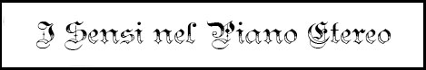

Il Piano Etereo si presenta come una distesa infinita di nebbia verdastra che secondo alcuni assomiglia ad un oceano vaporoso. Il Piano Etereo ingloba tutti i mondi del Primo Piano Materiale avvolgendoli come in una ragnatela. Questo piano dimensionale non è rappresentato solo da una componente fisica e materiale come il Primo Piano Materiale ma rappresenta un diverso stato di esistenza. Lo stesso concetto di distanza assume nel Piano Etereo un significato non meramente geografico ma anche mentale (le distanze esistono ma non possono essere misurate secondo le comuni scale di misura, inoltre, le stesse tendono ad acquisire una dimensione soggettiva). Il Piano Etere non è un luogo desertico ma una zona in cui è possibile imbattersi in diverse e particolari creature. Tra questi esseri è possibile distinguere tra coloro che essendo in grado di spostarsi tra i piani dimensionali predano nel Primo Piano Materiale e si nascondono nel Piano Etereo e quelle che, invece, dimorano e agiscono unicamente in quest'ultimo piano dimensionale. Il Piano Etereo può essere suddiviso in due zone principali: il Confine Etereo (che ne rappresenta la costa) e la Profondità Eterea.
La Profondità Eterea: Questa zona è una distesa dalle dimensioni incalcolabili che si estende come un oceano infinito. La nebbia che compone il Piano Etereo non è del tutto vuota. Fiumi di vapori emergono dal nulla, masse di foschia girano in lenti vortici mutando il loro colore dal grigio chiaro a varie tonalità di verde e turchese. Spirali di nebbia e forme nuvolose irregolari fluttuano in questo oceano vaporoso. All'interno della Profondità Eterea fluttuano i Semipiani, ossia isole di materia che possono essere equiparate agli altri piani dimensioni con l'unica differenza di essere più piccoli e dotati di confini definiti. Il numero di Semipiani è pressoché infinito potendo gli stessi essere anche molto piccoli. Alcuni di questi Semipiani, invece, sono di dimensioni tali da produrre effetti sugli altri piani dimensionali. Tra questi Semipiani il più conosciuto è il Semipiano dell'Ombra. La grandezza e la complessità di questo Semipiano lo rende ormai prossimo a divenire un Piano Dimensionale Interno. Nella Profondità Eterea il suolo svanisce. Il movimento nella Profondità Eterea unisce elementi fisici e mentali. Spostarsi in questa zona, dunque, non è come spostarsi nel Primo Piano Materiale (e nel Confine Etereo). Nella Profondità Eterea, infatti, concetti come la velocità di spostamento e la distanza non hanno lo stesso senso. La rapidità e la velocità degli spostamenti, infatti, dipendono direttamente dalla chiarezza del pensiero e della forza di volontà di recarsi in un determinato luogo.
Quando una creatura entra nel Piano Etereo da un altro piano dimensionale connesso con lo stesso costei "assume la forma eterea" e si sposta nel Confine Etereo. I corpi delle creature che si spostano nel Confine Etereo mantengono la loro forma e la loro funzione ma divengono "fuori fase" rispetto al piano dimensionale dal quale si sono spostate. Anche se lo stato fisico delle creature cambia in accordo con le leggi che regolano questo piano dimensionale i viaggiatori non noteranno alcuna sostanziale differenza nel loro corpo od in quello delle altre creature presenti. Può affermarsi, quindi, che un viaggiatore entra nel Piano Etereo assumendo la "forma eterea", quando ciò accade costui scivola via dalla "realtà" del suo piano di esistenza originario. Ovviamente, le creature non originarie del Piano Etereo possono assumere la "forma eterea" solo utilizzando la magia o poteri ad essa equivalenti. Quando l'effetto magico svanisce il corpo della creatura assume di nuovo la sua composizione naturale rientrando nel piano di provenienza, fenomeno conosciuto come riconversione materiale. Ciò può comportare alcuni rischi legati al fatto che nel Confine Etereo la legge dell'impenetrabilità dei corpi risulta molto affievolita potendo le creature ivi presenti attraversare ostacoli fisici impenetrabili nel piano materiale. Se, quindi, la riconversione materiale del corpo della creatura avviene mentre costei attraversa un ostacolo solido possono verificarsi spiacevoli conseguenze! Si noti, inoltre, che se la riconversione materiale avviene mentre la creatura si trova nella Profondità Eterea la stessa verrà risucchiata in una spirale di vapore che la catapulterà, attraverso il Confine Etereo, in un casuale piano dimensionale con esso connesso.
Esistono vari
effetti magici che permettono di raggiungere il Confine Etereo assumendo la
"forma eterea". Alcuni di questi permettono di mantenere tale forma per un tempo
limitato altri, invece, fanno assume tale forma a tempo indeterminato (questi
ultimi fanno acquisire la forma eterea in via permanente, in tali casi la
riconversione materiale può avvenire solo utilizzando nuovamente lo stesso od un
altro metodo permanente). Fra gli strumenti utilizzabili per passare nel Confine
Etereo possono annoverarsi:
- L'incantamento Armour of Etherealness (temporaneo).
- L'incantesimo Etherealness (temporaneo)
[link].
- L'incantesimo Plane Shift (permanente).
- La pozione magica Potion of Etherealness
(temporaneo)
[link].
- Un portale dimensionale (permanente).
A meno che non sia specificato diversamente, tutti questi strumenti trasportano
chi li usa nella zona del Confine Etereo che tocca il piano dimensionale di
provenienza. Qualora non sia previsto diversamente sia il passaggio alla forma
eterea che la riconversione materiale richiedono un intero round ed hanno,
quindi, effetto solo alla fine del relativo round di combattimento.

Respirare: Respirare è qualcosa che le creature del Primo Piano Materiale assumono per garantito, almeno finché possono farlo. Fortunatamente respirare nel Piano Etereo non è generalmente complicato. Una creatura, infatti, può respirare normalmente quando viaggia in questo piano dimensionale. Il Piano Etereo è pieno di particelle eteree che creano la nebbia di cui il piano è formato. Un corpo che respira questa nebbia, dunque, automaticamente trasforma le possibilità connesse alle particelle eteree nella realtà utile per il suo organismo ottenendo il gas appropriato per la sua respirazione. Il Confine Etereo a volte acquisisce delle qualità tipiche dei piani dimensionale ai quali è connesso, ciò può creare qualche complicazione per la respirazione nei pressi dei alcuni Piani Interni.
Mangiare e Bere: Nel Piano Etereo è necessario nutrirsi regolarmente. Il metodo più sicuro per nutrirsi in questo piano dimensionale è rappresentato dal portarsi il nutrimento dal piano di provenienza. Qualsiasi cibo portato nel Piano Etereo esisterà nello stesso stato etereo in cui si trova il viaggiatore e darà nutrienti come se fosse stato consumato nel piano dimensionale di origine.
Vista: L'ambiente presente sia nel Confine Etereo che nella Profondità Eterea riducono la distanza in cui è possibile vedere le cose. La nebbia costantemente presente in questo piano dimensionale, infatti, riduce la vista ad una distanza massima di 30 metri. La luce nel Piano Etereo è diffusa e sempre presente. Nonostante non sia distinguibile alcuna fonte luminosa le particelle eteree irradiano una luce simile a quella dell'alba che si diffonde da tutti i lati nel piano dimensionale. La luce permette una corretta visione ma è abbastanza dolce da non far subire penalità alle creature sensibili alla luce solare. In ogni caso questa illuminazione impedisce l'attivarsi dell'infravisione e non permette di nascondersi nelle ombre le quali sono naturalmente assenti (ombre e tenebre magiche possono comunque essere create). Anche quando ci si trova nel Confine Etereo, quindi, la luce presente nel piano dimensionale ad esso collegato non si diffonde tra i due piani dimensionali essendo per chi si trova nel Piano Etereo irrilevante se le zone corrispondenti del piano materiale siano o meno illuminate.
Udito: La densa consistenza dell'atmosfera di questo piano permette una migliore diffusione dei suoni i quali possono raggiungere una distanza doppia rispetto al normale. Le creature otterranno, dunque, il doppio delle possibilità di sentire i rumori (questo moltiplicatore va applicato prima di ogni altro modificatore dovuto all'uso di magie o strumentazioni).
Olfatto: Gli odori si avvertono in misura ridotta nel Piano Etereo. Tutti i tiri salvezza contro effetti di odori nauseanti e similari saranno effettuati con un bonus del +5%. Tale riduzione non incide però nell'uso, a breve distanza, di abilità come i Sensi Superiori delle creature.
Gusto: Le cose provenienti dai piani materiale perdono, una volta divenute eteree, quasi interamente il loro sapore. Il cibo, in particolare, diventerà quasi insapore. Per tale motivo, alcuni viaggiatori portano nel Piano Etereo spezie provenienti dai Piani Esterni che, normalmente, non possono essere assunte senza danni nei piani materiali. Nel Piano Etereo, però, queste spezie perdono le potenzialità lesive e fanno assumere sapere alle pietanze. Si pensi all'Erba Diabolica od alla Goryenne.
Si consideri il Confine Etereo come un piano dimensionale sovrapposto al Primo Piano Materiale, costituito dalla sua medesima struttura materiale ma avente consistenza fisica nebbiosa grigia, verdastra ed innaturale. Il Confine Etereo è, infatti, una parte peculiare del Piano Etereo la cui particolarità consiste proprio nella sua sovrapposizione al Primo Piano Materiale.
Quando si passa dal Primo Piano Materiale al Piano Etereo si entra nel Confine Etereo. Quando una creatura del Primo Piano Materiale entra nel Piano Etereo costei si trova immersa in una nebbia verdastra dalla tonalità cangiante. Si tratta di una zona di passaggio al confine tra i due piani dimensionali. In realtà, chi si trova in questa zona non è ancora nel pieno del Piano Etereo ma non è più nel Primo Piano Materiale. E' come se costui si trovasse contemporaneamente nei due piani dimensionali o meglio a cavallo tra l'uno e l'altro. Il bordo che separa il Confine Etereo dalla Profondità Eterea è facilmente riconoscibile essendo consistente in un velo di luce chiara simile ad una permanente aurora boreale oltre la quale vi è la Profondità Eterea. Il Confine Etereo avvolge anche i Piani Interni e tutti gli altri piani dimensionali presenti nella Profondità Eterea. Deve osservarsi che nonostante esista un unico Confine Etereo lo stesso non connette tutti i luoghi toccati dal Piano Etereo senza soluzione di continuità. Non è possibile, infatti, restare nel Confine Etereo per raggiungere un diverso mondo del Primo Piano Materiale oppure un altro piano dimensionale connesso con il Piano Etereo. Per raggiungere una qualsiasi di queste destinazioni il viaggiatore dimensionale deve necessariamente varcare la soglia della Profondità Eterea.
La caratteristica sovrapposizione tra i due piani dimensionali si riflette in un certo ordine delle cose che nel Confine Etereo viene comunque rispettato. Nel Confine Etereo, infatti, è avvertibile un definito senso di gravità che attrae i corpi verso il basso, inoltre i punti cardinali possono ancora essere rilevati nonostante la competenza Direction Sense non possa essere validamente utilizzata. Entrambe le citate caratteristiche, invece, non hanno alcun senso nella Profondità Eterea.
La sovrapposizione del Confine Etereo al Primo Piano Materiale permette, inoltre, una minima interazione visiva tra le creature che si trovano nei due piani dimensionali. Nel Confine Etereo una creatura può vedere i confini nebulosi delle cose e delle creature presenti nel confinante Primo Piano Materiale. Questa visione, però, non è nitida ed è limitata dalla nebbia del Piano Etereo ad una distanza massima di 30 metri. Tutti i colori sono ridotti ad una scala di grigio e verdastro. In particolare, sarà possibile osservare solo le forme nebbiose ed irregolari che compongono la materia senza che sia possibile osservare dettagli, notare colori, leggere scritte o vedere disegni (sarà anche oltremodo complicato distinguere tra le creature presenti aventi, più o meno, la stessa dimensione). Coloro che si trovano, invece, nel Primo Piano Materiale non possono vedere solitamente le creature che si trovano nel Confine Etereo a meno che non utilizzino la magia od poteri magici equivalenti (si pensi alle magie Truee Seeing o Detect Phase). Quando sono utilizzati questi strumenti le creature presenti nel Confine Etereo appariranno come ombre fumose e traslucide dai contorni vaghi e sfumati. Ovviamente, le creature presenti nel Confine Etereo possono osservarsi dettagliatamente tra loro con l’unica limitazione dettata dalla fitta nebbia ivi presente.
Per il resto, ogni altra interazione tra le creature presenti nei due piani dimensionali è impossibile. In base alla regola generale, infatti, la luce, ogni altra energia ed i suoni non passano da un piano dimensionale all’altro. Chi si trova nel Confine Etereo, infatti, non può interagire materialmente con gli oggetti e le creature presenti nel Primo Piano Materiale (ad esempio spostandoli o toccandoli), parimenti nessun suono si diffonde da un piano dimensionale all'altro. Le interazioni e le comunicazioni tra le due zone sono, infatti, rese possibili unicamente dall'utilizzo della magia o di poteri ad essa equivalenti. Nonostante la suddetta regola generale esistono alcune magie che sono attivate e hanno effetto contestualmente in entrambi i piani dimensionali, tra queste la più rilevante è sicuramente la magia di Dispel Magic la quale produce i suoi effetti in entrambi i piani dimensionali. Conseguentemente, il metodo temporaneo di presenza nel Confine Etereo utilizzato da una creatura potrebbe essere dissolto magicamente da chi si trova nel Primo Piano Materiale costringendo la creatura ad una forzosa riconversione corporea.
Il movimento del Confine Etereo - Data la presenza della forza di gravità i corpi nel Confine Etereo continuano a muoversi come nel Primo Piano Materiale. Non sarà, quindi, possibile fluttuare nell’aria senza un’adeguata forma di propulsione magica o naturale (come le ali).Il suolo sotto i piedi di chi si trova nel Confine Etereo è rappresentato da una versione nebulosa del suolo presente nel Primo Piano Materiale. Le strutture e gli ostacoli solidi esistenti nel Primo Piano Materiale esistono anche nel Confine Etereo e sono costituite da ammassi più densi di nube eterea (che non può essere attraversata dalla vista). La densità è tale da permettere alle creature presenti nel Confine Etereo di scalare questi ostacoli utilizzando le stesse regole della scalata, oggetti che nel Primo Piano Materiale non avrebbero reso il peso della creatura saranno semplicemente attraversati dal corpo di chi si sovrappone agli stessi nel Confine Etereo. Parimenti l’acqua apparirà come una nebbia fluida ed in movimento che richiederà di essere attraversata nuotando imponendo le medesime penalità previste nel primo piano materiale (sarà però possibile respirare senza problemi in tale luogo in quando lo stesso risulta comunque composto dalla stessa materia eterea). La particolarità del Confine Etereo è costituita dalla possibilità di attraversare gli ostacoli solidi presenti nel Primo Piano Materiale imprimendo una certa forza (il passaggio richiede il doppio del movimento). Sia fatta eccezione per le superficie composte da metalli particolarmente densi (si pensi al piombo o all'oro) o da cristalli e gemme nonché ad alcune barriere magiche che non possono essere attraversate nel Piano Etereo. Un soggetto che si trova nel Confine Etereo, quindi, potrà attraversare un solido muro di pietra, un fiume di lava od anche un muro di fuoco magico senza subire alcuna conseguenza (sempre che tali ostacoli siano presenti sull’adiacente Piano Materiale e non nello stesso Confine Etereo). All’interno degli oggetti solidi, però, sarà possibile effettuare solo movimenti assai lenti per vincere il peso della compatta nebbia eterea e, per tale motivo, la creatura che ivi si trova sarà considerata a tutti gli effetti impedita ed accecata (come anticipato, infatti, la densità della nebbia che costituisce gli oggetti solidi è tale da non permettere di essere attraversata dalla vista). Questa caratteristica del Confine Etereo lo rende un luogo incredibilmente utile per superare ostacoli o trappole che nel Primo Piano Materiale non si riesce a superare.
 |
Essendo
un piano dimensionale sovrapposto, il Confine Etereo ha la tendenza di
acquisire alcune caratteristiche proprie del piano dimensionale ad esso
adiacente. Questo fenomeno si verifica principalmente nelle zone del
Confine Etereo sovrapposte ai Piani Dimensionali Interni. In queste
zone, la vicinanza del piano elementale produce alcuni effetti anche nel
corrispondente Confine Etereo come indicato nella tabella. Di tutti i
piani dimensionali presenti nel multiverso, infatti, nessuno risulta più
ostile alla vita presente nel Primo Piano Materiale dei reami degli
elementi. I Piani Interni sono raggruppamenti di forze primordiali che
riescono ad estendere, seppure parzialmente, i loro effetti
nell'adiacente Confine Etereo. Gli effetti indicati nella tabella
saranno applicati appena una creatura entra nel relativo Confine Etereo
e successivamente ogni 3 turni di permanenza nello stesso.
|